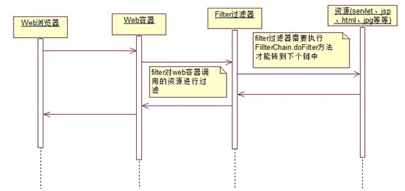

一、概念：
Filter也称之为过滤器，它是Servlet技术中比较激动人心的技术，WEB开发人员通过Filter技术，对web服务器管理的所有web资源：例如Jsp, Servlet, 静态图片文件或静态 html 文件等进行拦截，从而实现一些特殊的功能。例如实现URL级别的权限访问控制、过滤敏感词汇、压缩响应信息等一些高级功能。

二、Filter简介
Servlet API中提供了一个Filter接口，开发web应用时，如果编写的Java类实现了这个接口，则把这个java类称之为过滤器Filter。通过Filter技术，开发人员可以实现用户在访问某个目标资源之前，对访问的请求和响应进行拦截。简单说，就是可以实现web容器对某资源的访问前截获进行相关的处理，还可以在某资源向web容器返回响应前进行截获进行处理。
三、快速入门
1、新建一个类，实现Filter接口
2、实现doFilter()方法，打印一句话，来证明能够进行拦截
3、在web.xml中进行配置（参照Servlet配置）
4、访问一个页面，看看能不能拦截
1>
2>在web.xml中进行配置
四、Filter的应用场景
通过对filter过滤器的了解，可以得知在以下三种情况下可以做些处理：
1> 通过控制对chain.doFilter的方法的调用，来决定是否需要访问目标资源。
比如，可以在用户权限验证等等。判断用户是否有访问某些资源的权限，有权限放行，没权限不执行chain.doFilter方法。
2> 通过在调用chain.doFilter方法之前，做些处理来达到某些目的。
比如，解决中文乱码的问题等等。可以在doFilter方法前，执行设置请求编码与响应的编码。甚至可以对request接口进行封装装饰来处理get请求方式的中文乱码问题(重写相应的request.getParameter方法)。
3> 通过在调用chain.doFilter方法之后，做些处理来达到某些目的。
比如对整个web网站进行压缩。在调用chain.doFilter方法之前用类A对response对象进行封装装饰，重写getOutputStream和重写getWriter方法。在类A内部中，将输出内容缓存进ByteArrayOutputStream流中，然后在chain.doFilter方法执行后，获取类A中ByteArrayOutputStream流缓存数据，用GZIPOutputStream流进行压缩下。
五、Filter实现拦截的原理
Filter接口中有一个doFilter方法，当开发人员编写好Filter类实现doFilter方法，并配置对哪个web资源进行拦截后，WEB服务器每次在调用web资源的service方法之前(服务器内部对资源的访问机制决定的)，都会先调用一下filter的doFilter方法。
六、Filter生命周期
和Servlet一样Filter的创建和销毁也是由WEB服务器负责。不过与Servlet区别的是，它是1>在应用启动的时候就进行装载Filter类(与Servlet的load-on-startup配置效果相同)。2>容器创建好Filter对象实例后，调用init()方法。接着被Web容器保存进应用级的集合容器中去了等待着，用户访问资源。3>当用户访问的资源正好被Filter的url-pattern拦截时，容器会取出Filter类调用doFilter方法，下次或多次访问被拦截的资源时，Web容器会直接取出指定Filter对象实例调用doFilter方法(Filter对象常驻留Web容器了)。4>当应用服务被停止或重新装载了，则会执行Filter的destroy方法，Filter对象销毁。
注意：init方法与destroy方法只会直接一次。
七、Filter部署应用注意事项
1> filter-mapping标签中servlet-name与url-pattern。
Filter不仅可以通过url-pattern来指定拦截哪些url匹配的资源。而且还可以通过servlet-name来指定拦截哪个指定的servlet(专门为某个servlet服务了,servlet-name对应Servlet的相关配置)。
2> filter-mapping标签中dispatcher。
指定过滤器所拦截的资源被 Servlet 容器调用的方式，可以是REQUEST,INCLUDE,FORWARD和ERROR之一，默认REQUEST。用户可以设置多个<dispatcher> 子元素用来指定 Filter 对资源的多种调用方式进行拦截。
REQUEST：
当用户直接访问页面时，Web容器将会调用过滤器。如果目标资源是通过RequestDispatcher的include()或forward()方法访问或ERROR情况时，那么该过滤器就不会被调用。
INCLUDE：
如果目标资源是通过RequestDispatcher的include()方法访问时，那么该过滤器将被调用。除此之外，该过滤器不会被调用。
FORWARD：
如果目标资源是通过RequestDispatcher的forward()方法访问时，那么该过滤器将被调用，除此之外，该过滤器不会被调用。
ERROR：
如若在A.jsp页面page指令中指定了error属性=examError.jsp，那么A.jsp中若出现了异常，会跳转到examError.jsp中处理。而在跳转到examError.jsp时，若过滤器配置了ERROR的dispather那么则会拦截，否则不会拦截。